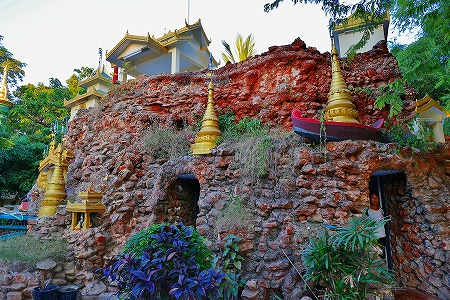

てなわけで、
モンユアの街に着いたのは陽もかなり傾いた時分。
15年ぶりに訪れたモンユアの街は
吃驚するほど車とバイクにあふれていた。
かつては土埃がもうもうとした西部劇というか明治時代みたいなところだったが…変われば変わるものだ。
街の中心にある
シュエジゴンパゴダへ。
この名前の寺はミャンマーでよく見る気がするが、黄金の勝利とか名誉とかそんな意味だったと思います。
夕日に照らされて金色の建物が金色に輝いている。
さーっと一陣の風が吹く。
ミャンマーのお寺巡りをしていて一番気持ちのいい時間帯だ。
堂内にはいかにもビルマ佛、といった仏像が並んでいる。
外では夕涼みに若者が集まっている。
一番西欧化の影響を受ける世代だろうに、皆伝統的なロンジーという巻きスカートのような衣装を履いている。
日本では失われたような長閑な光景だなあ〜、などと思っていると、よく見れば
みんな熱心にスマホの画面を見ているではないか！
↑この写真にいる15人中スマホ見てるのは9人！
この国でここ10年で一番変わったのはスマホの登場だとおもう。
勿論政治経済が劇的に変化しつつある国だが、庶民の暮らしの中ではスマホの登場が一番際立った変化だろう。
車やバイクが多くなったとはいえ、街並みはそんなに変わらない。
相変わらず馬車も走っているような町なのだ。
しかしそんな御者(馬遣いね）も
馬に鞭打ちながらスマホ見てたりするのだ。
ポケベルもガラケーも、さらに言えば固定電話すらろくに持ってなかったのにいきなりスマホ。
なんだこの西部劇と現代がシンクロしているようなアンバランス感。
それはそれとして境内の様子。

お寺の一画にはこんな築山がある。

全体がレンガで出来ているが、日本人の私にしてみれば
富士塚みたいに見える。
いくつもの階段といくつもの出入り口。
もうそれだけでドキドキするじゃねえか！
築山には数か所出入り口があり、中に入るとこのように参拝スポットになっている。
壁もカラフルな岩壁風味になっていて、洞窟感を醸し出している。
ふむふむ。富士塚より面白いじゃないの。
外へ出て階段を上る。
↑左上にあるのはミャンマーを代表する奇跡の岩、ゴールデンロックことチャイティーヨー。
この落ちそうで落ちなさそうな岩もよく出来ていて、本当に落ちそうな、そうでもないような絶妙なバランスの上に立っている。
その岩には橋が架かっていて、間近まで近づけるようになっている。
娯楽と参拝が一緒になった世界の縮図。
その辺も富士塚に何となく似てますね。
最早これ位の大きさだと大仏とも思えないほど大きな仏像が多い。
そしてミャンマーのお寺といえばこの
回転寿司スタイルの賽銭装置。
バッチリ稼動していたのでコインをバンバン投げてやりましたよ！
境内で遊ぶ子供たち。
彼らはまだ小さいのでスマホとかゲームとか持っていない。
風船で楽しそうに遊んでいた。
顔はタナカで真っ白になっていてチョット恐かったぞ。
これもミャンマーではよく見る放生会。
主に雀のような小さな鳥を買って放ってあげるというもの。
つまり放生したことで徳を積んだ、という事になるのだ。
お寺参りを終え、一旦宿に入り、外に出てみると仕事帰りなのか夜遊びに向かうのか、バイクがより一層凄いことになってました。
あ、そうだ。俺もsimカード買わなきゃ。
探すまでもなく、宿の隣が携帯屋だった。
店のお姉ちゃんがあっという間にsimをセッティングしてくれて、3Gだけど快適にネットできましたよ(2015年談）。
次のパトロールにGO！